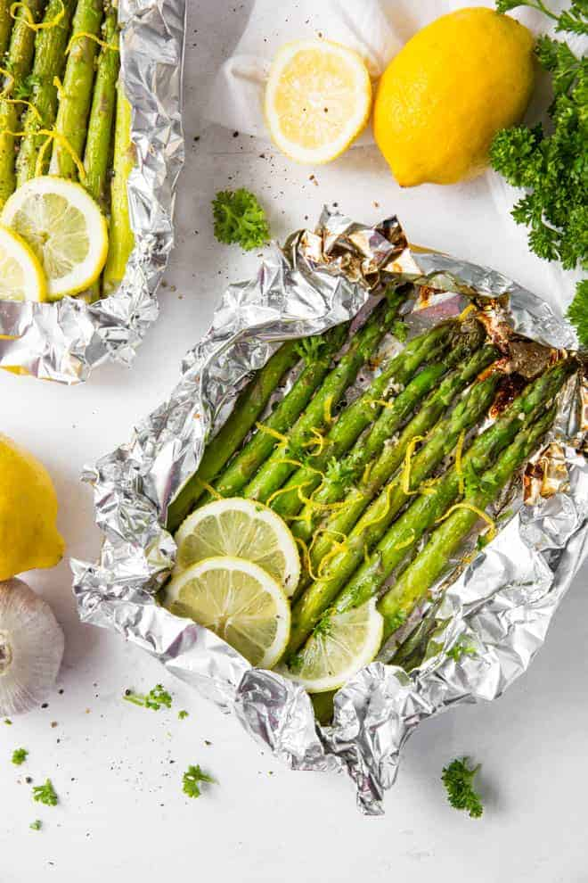

Grilled Asparagus Recipe

Some nice looking grilled asparagus
This recipe will teach you how to make the best grilled asparagus you've ever tasted.
Asparagus is rich in many nutrients and vitamins, making it a great addition to any diet.
Ingrediants
- 1 LB fresh asparagus spears, trimmed
- 1 tablespoon olive oil
- salt and pepper to taste
Instructions
- Preheat an outdoor grill for high heat and lightly oil.
- Lightly coat the asparagus spears with olive oil. Season with salt and pepper to taste.
- Cook asparagus on the preheated grill, turning often until lightely charred.